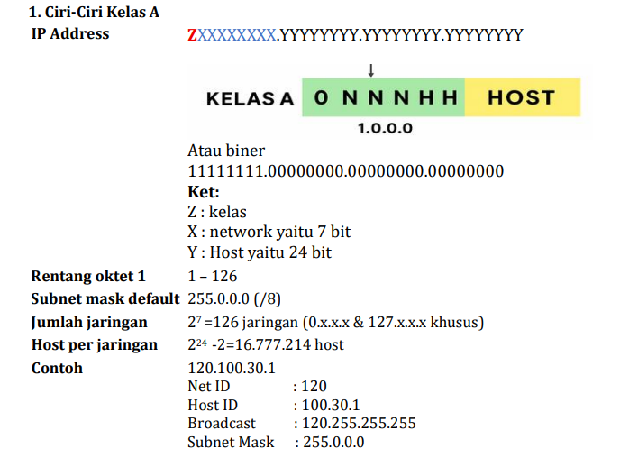
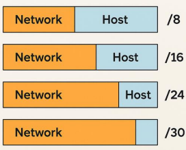

IP Address (Internet Protocol Address) adalah alamat unik yang diberkan kepada setiap perangkat yang terhubung ke jaringan komputer yang menggunakan protokol Internet untuk komunikasi. IP Address berfungsi sebagai identitas dan lokasi perangkat dalam jaringan agar data dapat dikirim dengan tepat.
Format: 32-bit, biasanya ditulis dalam bentuk desimal bertitik (contoh: 192.168.0.1)
Terdiri dari 4 oktet (4 kelompok angka dari 0 sampai 255)
Contoh: 10.0.0.1, 172.16.0.1, 192.168.1.1
IPv4 hanya memiliki 4,3 miliar alamat unik.
Format: 128-bit, ditulis dalam heksadesimal dengan tanda titik dua (contoh: 2001:0db8:85a3::8a2e:0370:7334)
Dikembangkan untuk mengatasi keterbatasan IPv4 dengan jumlah alamat yang sangat banyak.
IP Address IPv4 dibagi menjadi dua bagian:
Network ID (identifikasi jaringan)
Host ID (identifikasi perangkat dalam jaringan)
Misalnya, pada IP 192.168.1.10 dengan subnetmask 255.255.255.0:
Network ID = 192.168.1
Host ID = 10
Subnet Mask digunakan untuk memisahkan bagian Network ID dan Host ID pada IP Address. Contoh subnet mask yang umum:
255.0.0.0 (kelas A)
255.255.0.0 (kelas B)
255.255.255.0 (kelas C)
Subnetting memungkinkan jaringan besar dibagi menjadi jaringan lebih kecil.
Kelas A: 1.0.0.0 - 127.255.255.255 (untuk jaringan sangat besar)
Kelas B: 128.0.0.0 - 191.255.255.255 (jaringan menengah)
Kelas C: 192.0.0.0 - 223.255.255.255 (jaringan kecil, LAN biasanay)
Kelas D: 224.0.0.0 - 239.255.255.255 (multicast)
Kelas E:240.0.0.0 - 255.255.255.255 (eksperimental)
Kelas A adalah salah satu pembagian alamat IPv4 berdasarkan classfull addressing (sistem lama sebelum CIDR). Kelas ini dipakai untuk jaringan yang sangat besar karena jumlah host per jaringannya banyak sekali.
Host banyak (cocok untuk jaringan besar).
Boros IP kalau jaringannya kecil.
Tidak efisien untuk organisasi menengah/kecil (makanya sekarang dipakai 'subnetting/CIDR').
Kelas B adalah kategori alamat IPv4 dalam sistem Classfull addressing yang digunakan untuk jaringan skala menengah hingga besar. Jumlah host per jaringan tidak sebesar kelas A, tapi jaih lebih efisien kalau jumlah perangkatnya ribuan.
Cocok untuk perusahaan atau kampus besar.
Lebih hemat IP dibanding kelas A.
Masih boros jika jaringannya kecil (makanya sekarang pakai subnetting/CIDR).
Kelas C adalah salah satu kategori alamat IPv4 pada sistem classfull addressing, digunakan untuk jaringan skala kecil (misalnya kantor kecil, lab, atau rumah).
Jumlah jaringan sangat banyak
Tidak boros alamat
Konfigurasi mudah
Lebih aman
Jumlah host per jaringan sedikit
Kurang fleksibel untuk jaringan besar
Private IP Address:
Digunakan dalam jaringan lokal dan tidak bisa diakses langsung dari internet. Contoh:
10.0.0.0 - 10.255.255.255
172.16.0.0 – 172.31.255.255
192.168.0.0 – 192.168.255.255
Public IP Address:
Alamat yang bisa diakses di internet dan diberikan oleh ISP.
CIDR adalah metode penulisan dan pembagian alamat IP yang tidak bergantung pada kelas A/B/C seperti pada sistem classfull addressing.
Frmat penulisan: alamat_IP/prefix_length
Contoh: 192.168.10.0/24
192.168.10.0 → alamat network
/24 → jumlah bit untuk network (prefix length), sisanya untuk host.
Mengganti sistem classfull yang kaku.
Menghemat penggunaan alamat IP (konservasi IPv4).
Mempermudah penggabungan jaringan (route aggregation).
Fleksibilitas dalam pembagian subnet.
IP address dibagi jadi:
Network ID → bagian awal, menunjukkan jaringan.
Host ID → bagian akhir, menunjukkan perangkat dalam jaringan.
Prefix length (/x) menentukan batasnya:
/8 → 8 bit network, 24 bit host.
/16 → 16 bit network, 16 bit host.
/24 → 24 bit network, 8 bit host.
| CIDR | Subnet Mask | Jumlah Host Usable | Network Increment |
|---|---|---|---|
| /8 | 255.0.0.0 | 16.777.214 | 1.0.0.0 |
| /16 | 255.255.0.0 | 65.534 | 0.1.0.0 |
| /24 | 255.255.255.0 | 254 | 0.0.1.0 |
| /25 | 255.255.255.128 | 126 | 0.0.0.128 |
| /26 | 255.255.255.192 | 62 | 0.0.0.64 |
| /27 | 255.255.255.224 | 30 | 0.0.0.32 |
| /28 | 255.255.255.240 | 14 | 0.0.0.16 |
| /29 | 255.255.255.248 | 6 | 0.0.0.8 |
| /30 | 255.255.255.252 | 2 | 0.0.0.4 |
Contoh diagram CIDR
Langkah-langkah:
Tentukan prefix length /x.
Hitung jumlah bit host = 32 - x32 -x.
Hitung host usable = 2bit host - 22^ {\text{bit host}} - 2.
Cari subnet mask dnegan mengubah bit network jadi 1 dan host jadi 0.
Network increment = 256-nilai oktet subnet mask yang berubah 256 - \text{nilai oktet subnet mask yang berubah}.
Contoh
192.168.10.0/26
Prefix: /26 → bit host = 6
Host usable = 26-2=622^6-2=62
Subnet mask: 255.255.255.192
Increment: 256 -192 = 64
Range subnet:
192.168.10.0 - 192.168.10.63
192.168.10.64 - 192.168.10.127
192.168.10.128 - 192.168.10.191
192.168.10.192 - 192.168.10.255
Efisien: Tidak membuang banyak IP untuk jaringan kecil.
Fleksibel: Bisa membuat subnet sesuai kebutuhan.
Routing ringaks: Menggabungkan banyak jaringan menjadi satu route.
Subnetting adalah proses membagi jaringan yang lebih besar menjadi subnet-subnet yang lebih kecil dan berukuran tetap. Subnetting menggunakan subnet mask yang seragam untuk semua subnet. Setiap subnet memiliki subnet mask yang sama, yang berarti semua subnet akan memiliki jumlah IP yang tersedia yang sama. Subnetting dapat menyebabkan penggunaan alamat IP yang tidak efisien, karena setiap subnet mungkin tidak sepenuhnya memanfaatkan semua alamat yang tersedia.
Subnetting berguna bagi organisasi yang perlu mengelompokkan jaringan mereka menjadi sejumlah jaringan kecil yang tetap, seperti memisahkan departemen atau fungsi.
Kita punya network 192.168.10.0/24 dan ingin membuat 4 subnet yang sama besar.
Langkah 1 — Tentukan jumlah bit untuk subnet
Subnet awal /24 berarti: 255.255.255.0 → 8 bit host. 11111111.11111111.11111111.00000000 = 24
Kita butuh 4 subnet → rumus: 2n ≥ jumlah subnet. Di mana n = jumlah bit yang "dipinjam" dari host untuk subnet ID. 22 = 4 → jadi kita pinjam 2 bit dari bagian host. 11111111.11111111.11111111.11000000
Langkah 2 — Subnet mask baru
Mask awal: /24
Tambah 2 bit: /26
Subnet mask /26 = 255.255.255.192 (192 dalam biner: 11000000)
Langkah 3 — Hitung jumlah host per subnet
Sisa bit host = 8-2=6 bit.
Host per subnet = 26-2=64-2 = 62 host
Langkah 4 — Tentukan network ID & broadcast tiap subnet. Increment = 256 -192 =64.
Subnet 1:
Network: 192.168.10.0
Broadcast: 192.168.10.63
Host: 192.168.10.1 - 192.168.10.62
Subnet 2:
Network: 192.168.10.64
Broadcast: 192.168.10.127
Host: 192.168.10.65 - 192.168.10.126
Subnet 3:
Network: 192.168.10.128
Broadcast: 192.168.10.191
Host: 192.168.10.129 – 192.168.10.190
Subnet 4:
Network: 192.168.10.192
Broadcast: 192.168.10.255
Host: 192.168.10.193 – 192.168.10.254